Welcome to the Invify Enterprise Master User Manual & Operations Guide. Invify is an offline-first enterprise Point-of-Sale (POS) and business operating system engineered for high availability across retail supermarkets, educational institutions, and repair service workshops.
PART 1: Platform Foundation, Architecture & Core Settings
Universal System Architecture, Onboarding Wizard, All Payment Gateways, Hardware, and Peer-to-Peer Sync
1. System Architecture & Offline-First Engine
Invify utilizes a dual-engine architecture: an autonomous local embedded database for instant offline cashier billing, coupled with an asynchronous background replication worker that synchronizes with the Invify Cloud and local LAN peer devices whenever network connectivity is available.
2. Initial Setup & Device Onboarding Wizard
- Step 0: Welcome & Profile Linking: Register a new business or tap "LINK DEVICE TO EXISTING PROFILE" to scan the pairing QR code from your Web Admin Dashboard (under Fleet > Pair Device). Scanning instantly binds the terminal to your business account.
- Step 1: Identity & Mode Setup:
Enter First Name, Last Name, Email Address, Web Password (minimum 9 characters with uppercase, lowercase, number, symbol), Business Name, Phone Number, and optional Agent Code.
Live Email Availability Guard: The email input performs a real-time availability check when unfocused or on clicking "NEXT STEP". Duplicate emails are strictly blocked, presenting a dialog with direct shortcuts to link the existing profile.
- Step 2: Address & Hardware Telemetry: Enter Street Address, Country, State, and LGA. The system automatically records GPS coordinates and hardware device identifiers to secure peer-to-peer sync.
- Step 3: Plan Selection & OTP Verification: Select either a Free 3-Day Trial or enter an official 16-Digit Activation Code. Invify transmits a 6-digit OTP code to your registered Email or WhatsApp to finalize activation.
3. All Payment Methods & Gateway Integrations
| Payment Channel | Hardware / Gateway | Operational Description & Verification |
|---|---|---|
| Cash Tender | Physical Cash Drawer | Input amount tendered; system computes change, logs cash-on-hand into Internal Ledger, and prints receipt. |
| Card (POS / MPOS) | Bluetooth/USB MPOS Terminal | Exact bill amount transmits to MPOS; customer enters chip card & PIN; auth code prints on receipt. |
| Dynamic Virtual Accounts | Quasar Banking Gateway | Generates instant 10-digit account (Wema/Providus/Titan). Customer transfers via bank app/USSD. Webhook automatically settles invoice as PAID within seconds. |
| Direct Bank Transfer | Manual Bank Transfer | Bursar/cashier records sender bank, account name, and transaction reference code for manual reconciliation. |
| Split & Partial Payments | Internal Ledger | Accept deposits (e.g. 50% upfront for service jobs or school fees) with balance tracking and updated invoices. |
4. Hardware Peripherals & Peer LAN Sync
Invify interfaces natively with 58mm and 80mm ESC/POS Bluetooth and USB thermal printers, handheld USB/Bluetooth barcode scanners, electronic cash drawers, and MPOS readers. Multiple counter terminals discover each other over local Wi-Fi to synchronize invoices and inventory without internet connectivity.
PART 2: Complete Retail Mode Operations Guide
Supermarket POS, Stock Management, Valuation Reports, Customer Debt Ledgers, and Cloud Metrics
Retail Home Dashboard & 14-Tile Reference

The Retail Dashboard organizes store management into 14 touch-optimized activity tiles: New Invoice, Customer Lookup, Inventory Report, Printer & MPOS, NIBSS Cert, Stock, Sales Records, Transaction History, Calculator, Settings, Admin Hub, Cloud Metrics, Finance Analytics, and Reconciliation.
Invoice History, Sales Summary & Filters

Filter transactions by cashier, payment channel, amount, or tap Pending Transfers to instantly isolate unverified bank transfers. Review period metrics including Total Invoiced, Total Collected, Card POS, Bank Transfer, Virtual Account, and Cash.
Internal Ledger Analytics

Cloud Metrics & Offline Queue

PART 3: Complete School Mode Operations Guide
System Setup, Term Bill POS, Fee Structuring, Student 360 Hub, Invoice History, Finance Treasury, Analytics, Digital Grading & AI Lesson Notes
School Mode 18-Tile Master Dashboard
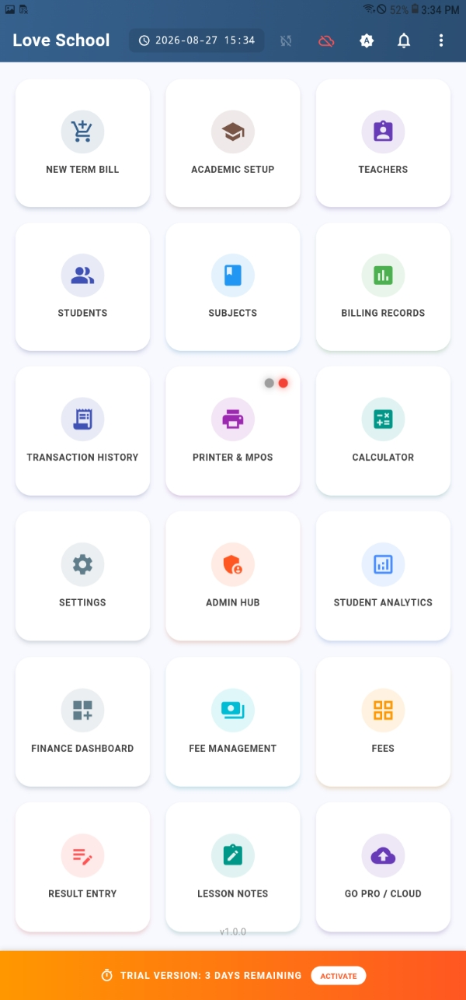
System Setup & Institutional Branding
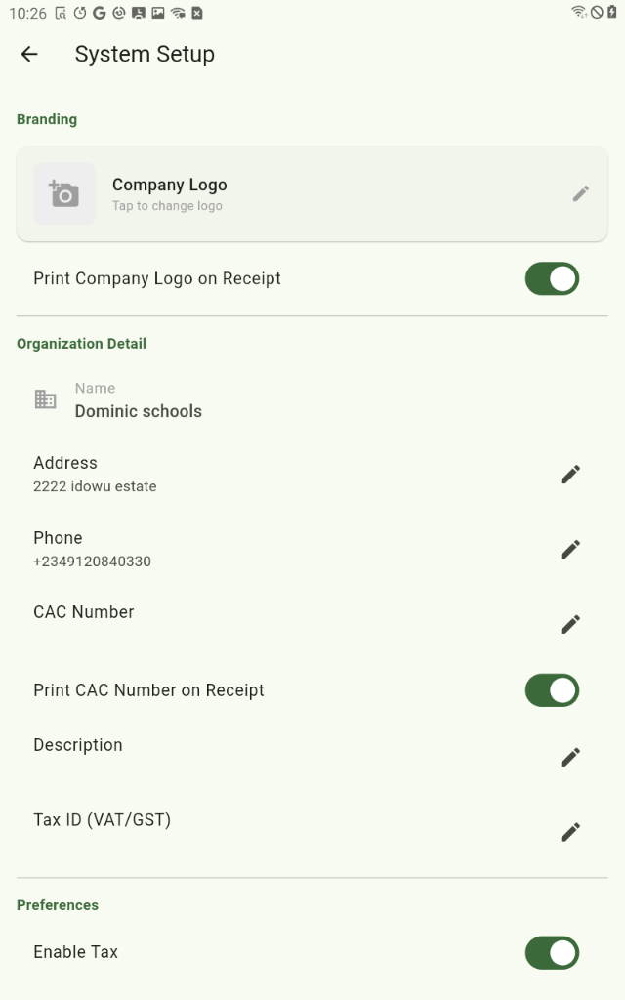
Fee Structuring, Catalog & Operational Tools
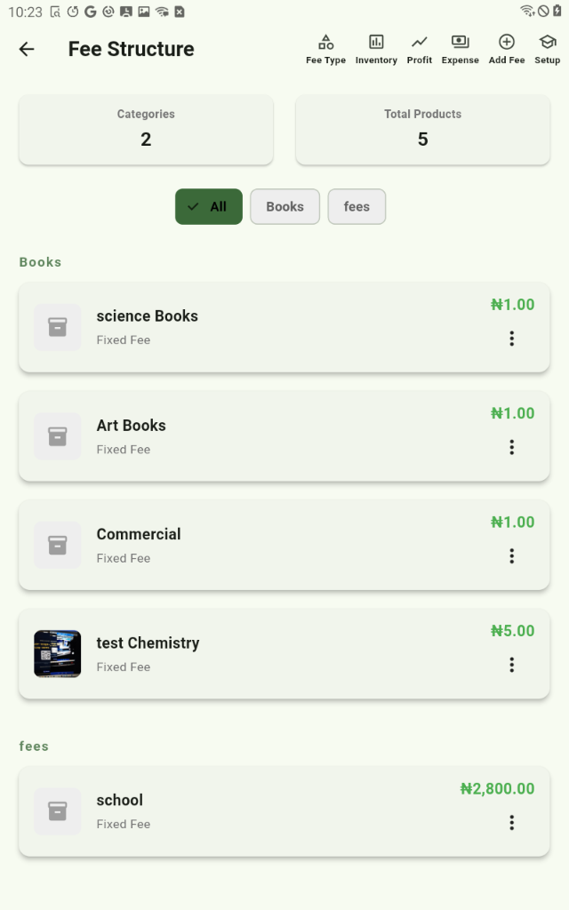
New Term Bill POS Terminal
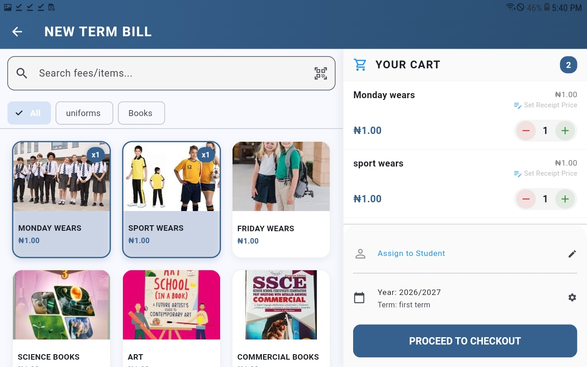
Invoice Preview & Checkout Modal
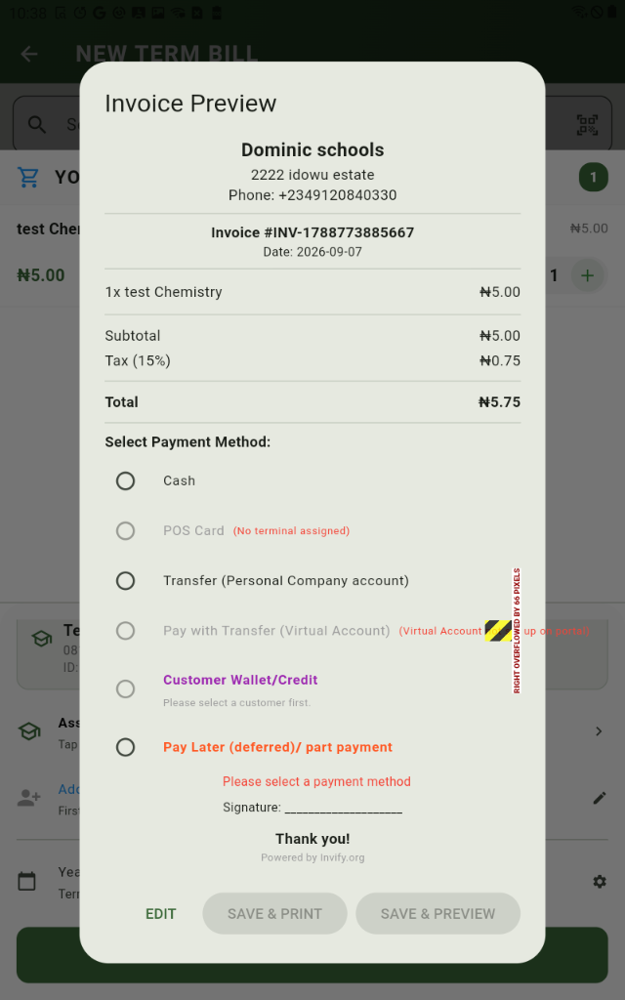
Student Profile 360° Hub & Dedicated Virtual Accounts
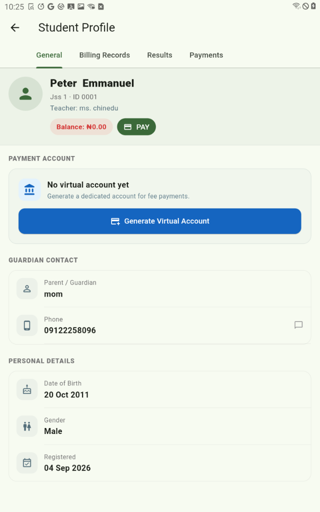
Invoice History, Period Summary & Auditing
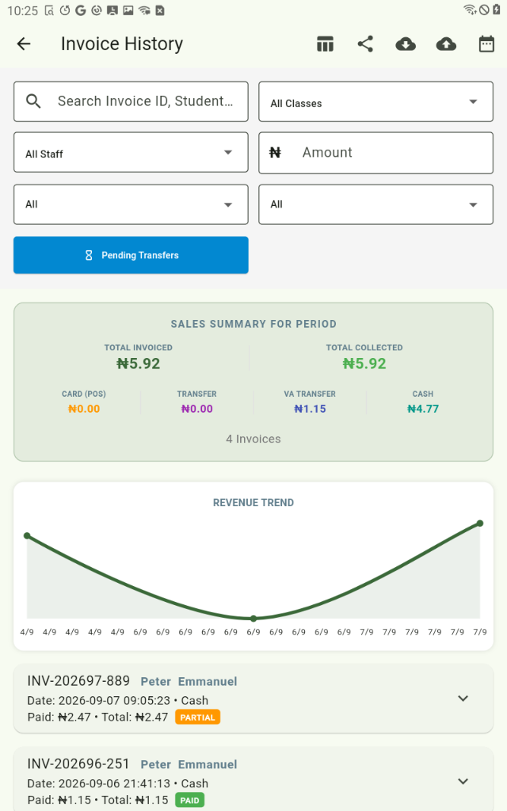
Finance Dashboard, Treasury & Withdrawals
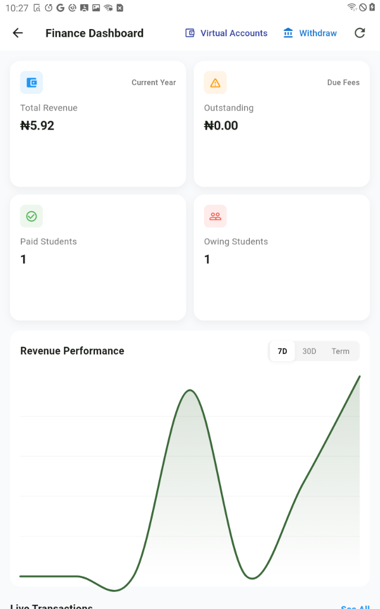
Student Analytics & Revenue Trends
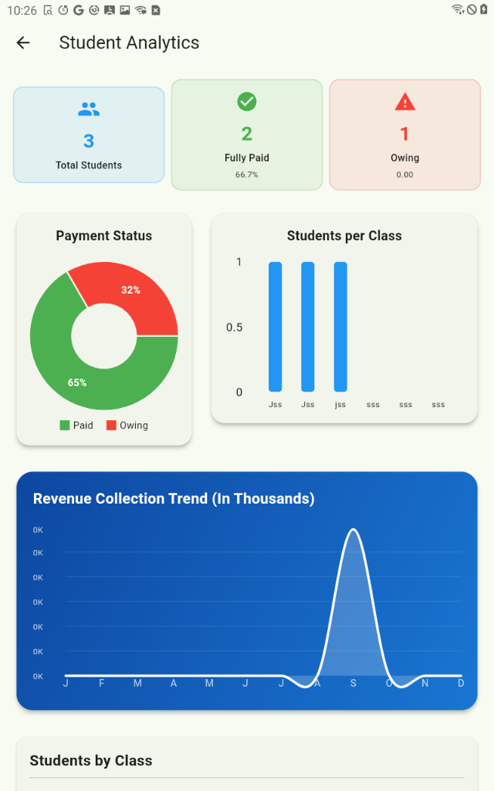
Result Entry & Digital Grading
AI Lesson Notes Curriculum Wizard
PART 4: Complete Service Mode Operations Guide
Job Intake, Status Lifecycle, Workmanship & Parts Breakdown, Payments, and Workshop Analytics
Service Mode Home Dashboard & Quick Drawer
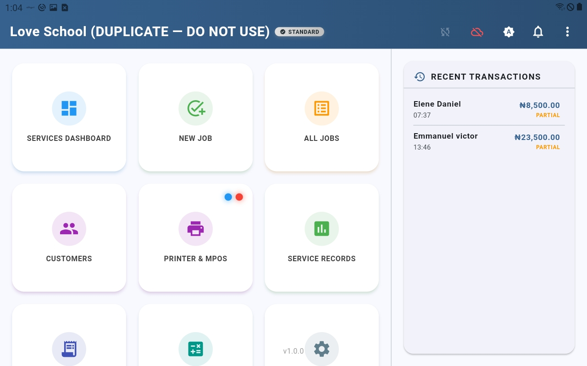
Services Overview & Job Control Room
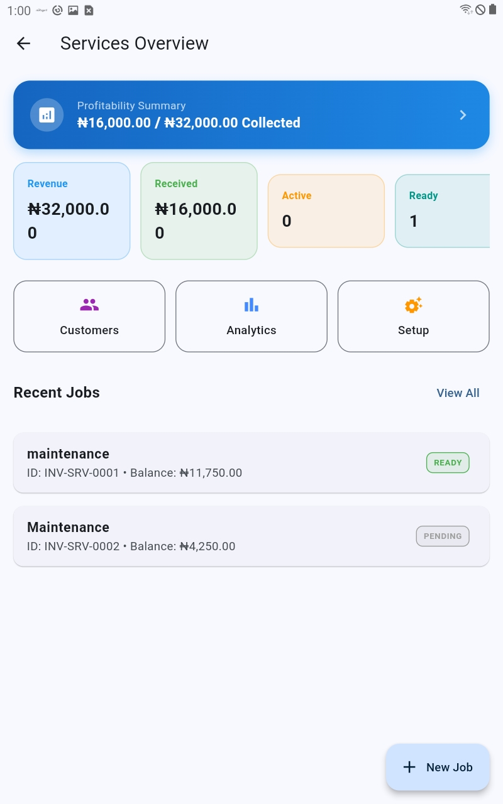
Job Details & Interactive Status Lifecycle
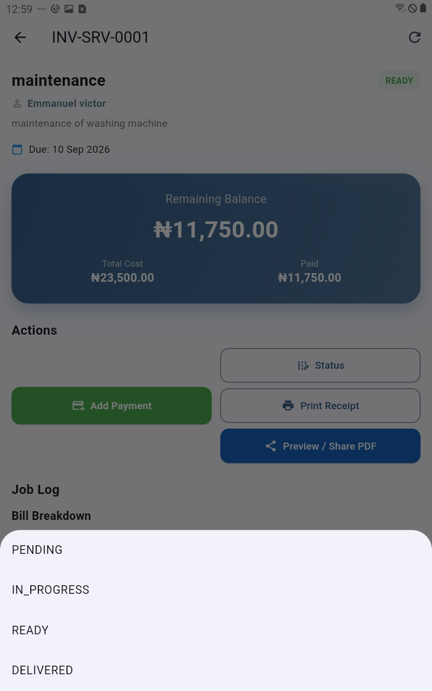
Itemized Bill Breakdown & Audit Logs
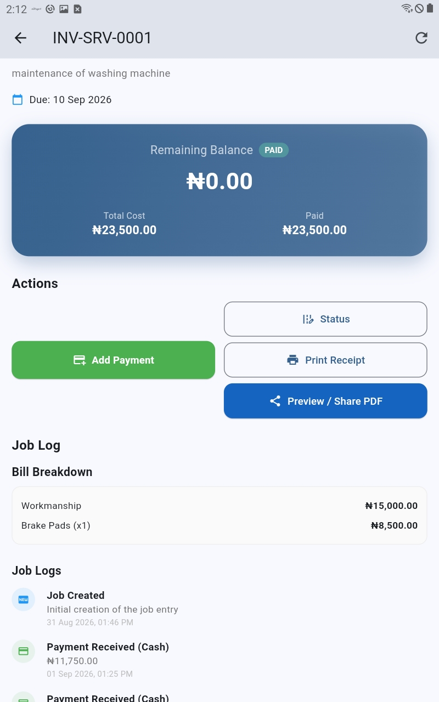
Payment Confirmation & Deposit Handling
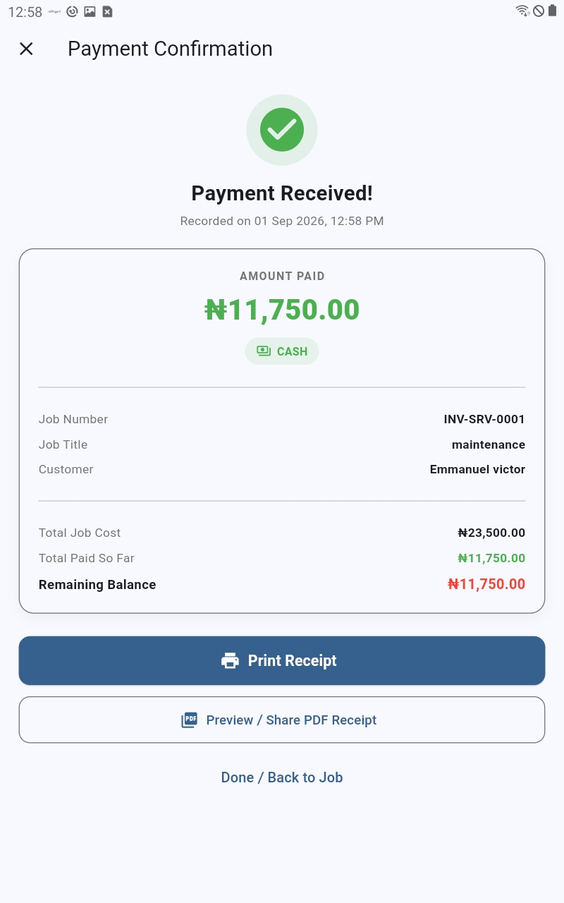
Service Invoice History & Balances
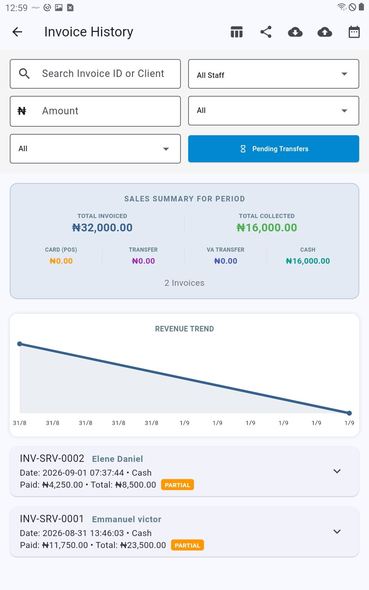
Services Analytics & Workshop Profitability
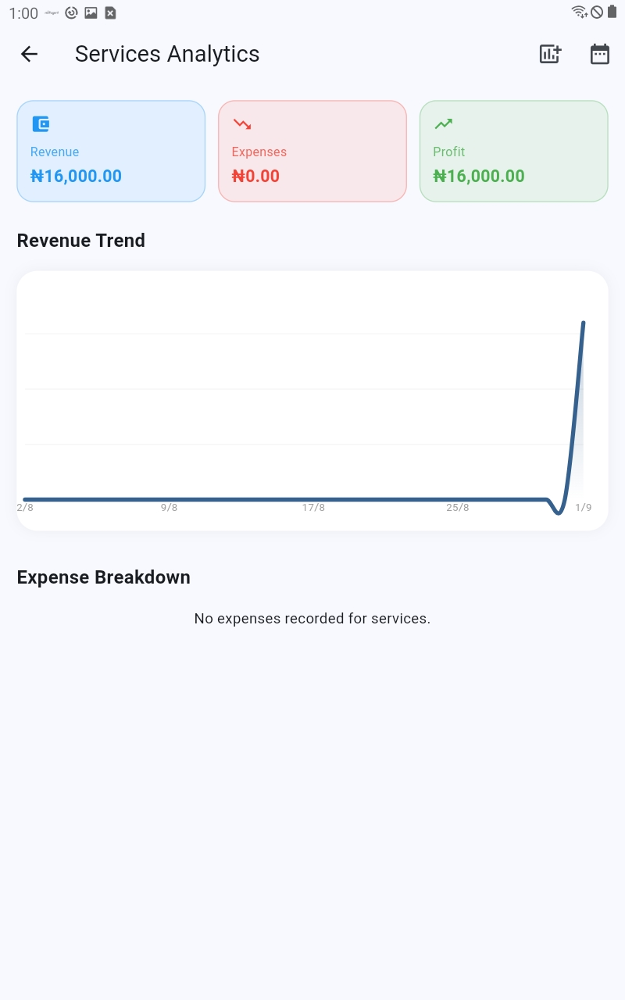
Enterprise Support & Technical Contacts
| Support Channel | Official Contact & Availability |
|---|---|
| Technical Support Desk | support@invify.org · 24/7 Enterprise Assistance |
| WhatsApp Merchant Helpline | +234 802 355 2282 · Priority Merchant Hotline |
| Web Management Portal | https://app.invify.org · Central Fleet, Cloud Analytics & User Provisioning |